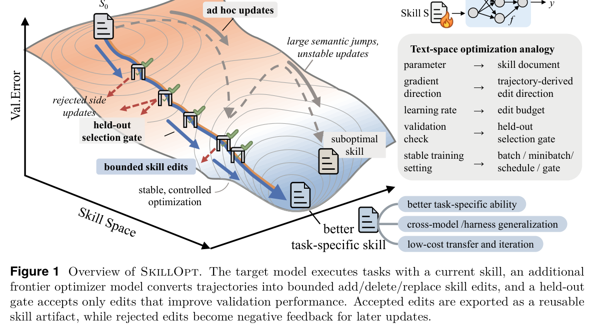
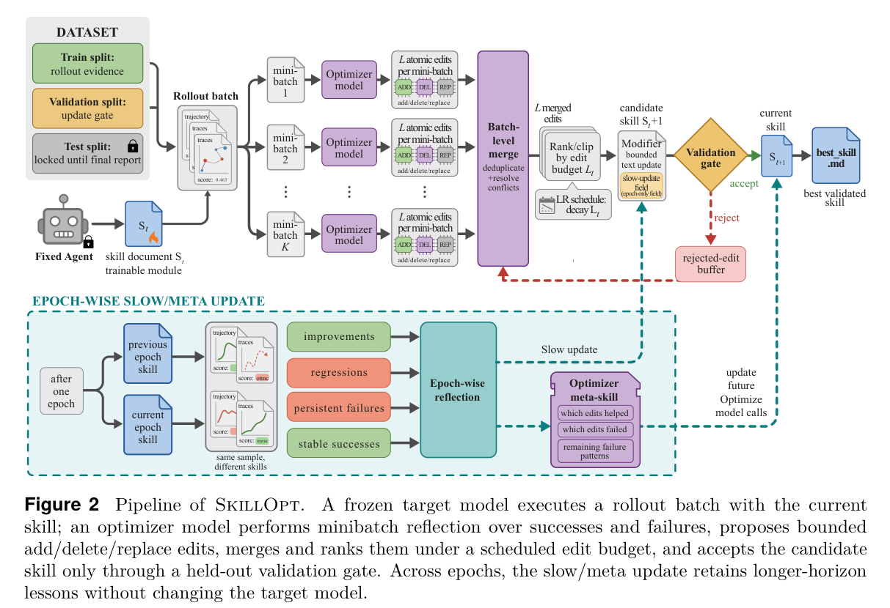
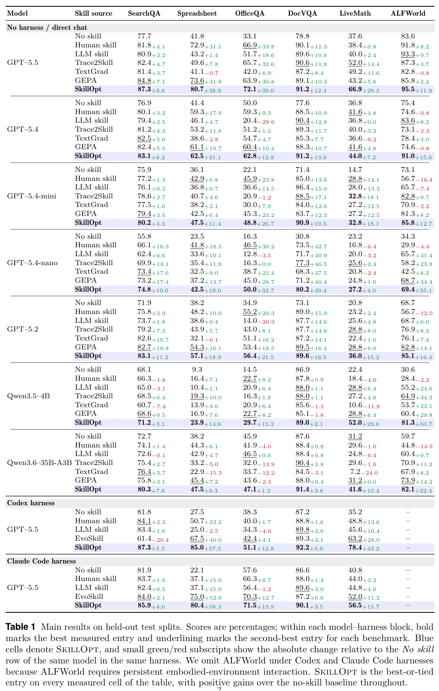
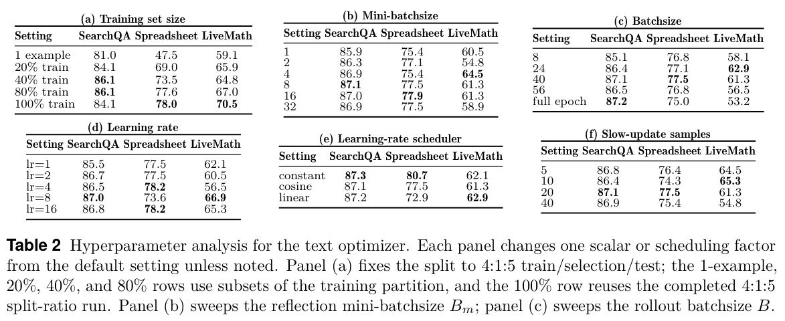
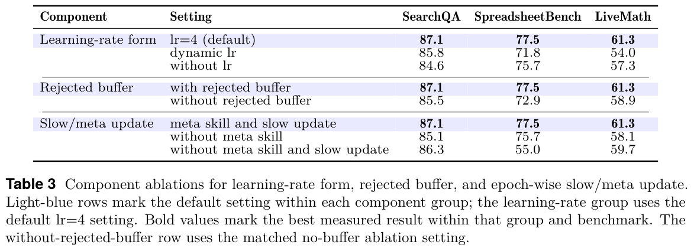
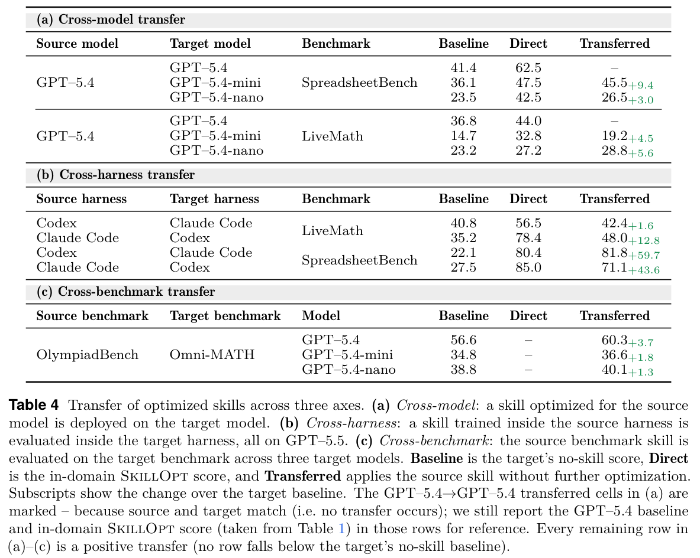
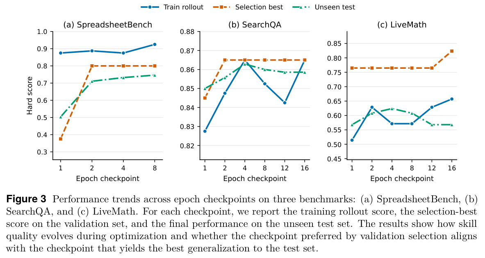
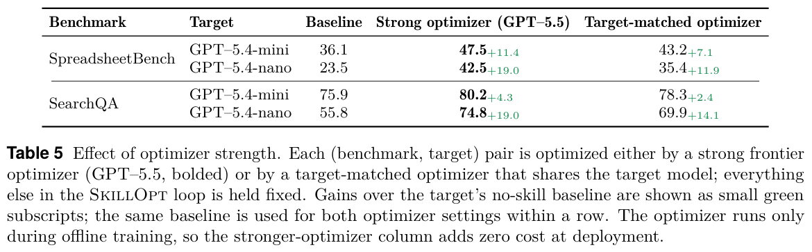
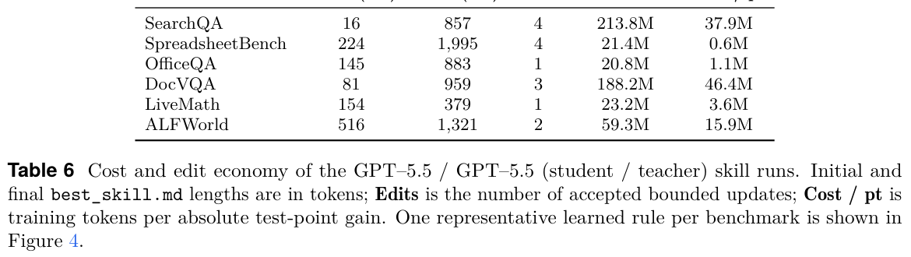
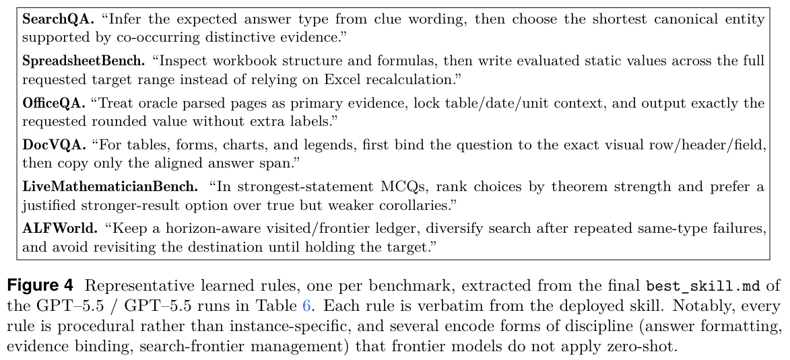

一句话总结: SkillOpt 把 agent skill 当成冻结模型之外的可训练文本状态,用 rollout evidence、结构化 add/delete/replace edit、textual learning rate、held-out validation gate 和 rejected-edit buffer,把“写一份技能说明”变成类似深度学习优化器的可控训练过程。
best_skill.md;部署时不增加额外模型调用。
① 图说明:总览图把 SkillOpt 类比为“文本空间 optimizer”:目标模型带着当前 skill 执行任务,optimizer model 根据 scored rollouts 生成有界 skill edits,再由 held-out gate 决定是否接受。
② 关键数据:图中明确对应 weight-space training 的几个部件:parameter → skill document, gradient direction → trajectory-derived edit direction, learning rate → edit budget, validation check → held-out selection gate。
③ 启示:论文的核心不是让 LLM 自我反思一次,而是把 skill 版本之间的变化限制在可追踪、可拒绝、可复用的路径上;这也是它声称比 ad hoc skill rewriting 稳定的根本理由。

① 图说明:完整 pipeline 图:train split 产生 rollout evidence,optimizer model 对失败/成功 minibatch 分别反思,生成 add/delete/replace edits,经 batch-level merge、rank/clip 和 modifier 得到 candidate skill,再用 validation split 接受或拒绝。
② 关键数据:图中有三个状态通道:当前 skill $S_t$,候选 skill $S_{t+1}$,best validated skill;失败更新进入 rejected-edit buffer,epoch 边界还会执行 slow/meta update。
③ 启示:这张图说明 SkillOpt 的“训练纪律”来自拆分:train 只供产生证据,validation 只供门控,test 锁到最终报告;这比无条件把反思写回 skill 的流程更像真正的训练系统。

① 图说明:主结果表,横跨 direct chat、Codex harness、Claude Code harness,比较 no skill、human skill、LLM skill、Trace2Skill、TextGrad/GEPA/EvoSkill 与 SkillOpt。
② 关键数据:GPT-5.5 direct chat 平均从 no-skill 的 58.8 提升到 82.3,+23.5;Codex harness 平均 +24.8;Claude Code harness 平均 +19.1。论文统计所有 52 个 model-benchmark-harness cell 中 SkillOpt 都是 best 或 tied-best。
③ 启示:SkillOpt 的收益不是只来自一个 benchmark 或一个执行环境;最有说服力的是它在 direct chat 和 agentic harness 里都有效,说明优化出来的是可迁移 procedural skill,不是某个 harness 的 prompt hack。

① 图说明:超参数表,分别考察 training set size、reflection minibatch size、rollout batch size、learning rate、learning-rate scheduler 和 slow-update samples。
② 关键数据:训练数据增加通常提升效果但很快进入收益递减;默认配置围绕 4 epochs、batch size 40、minibatch size 8、edit budget 4、cosine decay、slow update 20 samples。
③ 启示:文本优化同样需要 batch、minibatch、step size 与 schedule。过小 batch 噪声大,过大 edit budget 会破坏 skill 连续性;这支撑了“learning rate in text space”的设计。

① 图说明:组件消融表,比较学习率形式、是否使用 rejected buffer、是否启用 epoch-wise slow/meta update 等机制。
② 关键数据:表中浅蓝行标记默认 SkillOpt;去掉 rejected buffer 或 slow/meta update 后,SearchQA、SpreadsheetBench、LiveMath 等任务都有不同程度下降。
③ 启示:性能不只是来自“让强模型帮忙改 prompt”。负反馈缓存和跨 epoch 慢更新是稳定优化路径的一部分,能减少重复犯错和短期修补造成的退化。

① 图说明:迁移表分三块:cross-model、cross-harness、cross-benchmark,检验训练出的 skill artifact 离开原始设置后是否仍有效。
② 关键数据:SpreadsheetBench skill 从 GPT-5.4 迁移到 GPT-5.4-mini/nano 仍有正收益;Codex 与 Claude Code 之间互迁也保持明显提升;OlympiadBench skill 迁移到 Omni-MATH 仍带来 +1 到 +4 点左右收益。
③ 启示:如果 skill 只是过拟合某个模型或某批样本,迁移应当崩掉。表 4 是论文应用价值的关键证据:skill 可以优化一次、审计为文本、再跨模型和环境复用。

① 图说明:三条 epoch checkpoint 曲线分别展示 SpreadsheetBench、SearchQA、LiveMath 上的性能随优化进程变化。
② 关键数据:曲线整体呈阶梯式提升,并非每个 checkpoint 都单调上升;validation gate 只让通过选择集验证的 candidate 进入 best_skill。
③ 启示:这张图补充了表格结果:SkillOpt 是 iterative optimization,不是一次性生成。提升来自多次小步、验证门控和拒绝失败更新的组合。

① 图说明:optimizer strength 表,比较 strong frontier optimizer 与 target-matched optimizer 对同一 target model 的技能优化效果。
② 关键数据:强 optimizer 通常更好,例如 SpreadsheetBench 对 GPT-5.4-nano 的增益可到 +19.0;target-matched optimizer 也有正收益,但提升幅度较小。
③ 启示:SkillOpt 把“会做任务的模型”和“会改 skill 的模型”解耦。强 optimizer 可以作为训练时老师,而部署时只留下小 skill 文档,不留下老师模型调用成本。

① 图说明:成本与 edit economy 表,报告各 benchmark 初始/最终 skill 长度、accepted edits 数量、优化 token 成本与部署时 skill token 成本。
② 关键数据:最终 best_skill.md 大多在约 300-2000 tokens 范围内,accepted edits 只有 1-4 次;训练时 optimizer token 成本较高,但部署时只需附带小文本。
③ 启示:论文想证明的工程卖点是 amortization:优化阶段可以较贵,但产物是可读、可审计、低推理成本的 skill。真正适合的是会重复使用的任务域,不是一次性查询。

① 图说明:代表性 learned rules,每个 benchmark 抽出一条最终 best_skill.md 中学到的规则,如 SearchQA 的答案类型推断、SpreadsheetBench 的公式和值检查、ALFWorld 的 visited/frontier ledger。
② 关键数据:这些规则不是训练样本答案,而是任务过程约束:如何搜索、验证、写入、排除、管理状态。它们体现 skill 的 procedural nature。
③ 启示:SkillOpt 学到的是“怎么做事”的可读操作规范,而不是把案例硬编码进去。这也解释了为什么跨模型/跨 harness transfer 会有价值。
May 2026. SkillOpt: Executive Strategy for Self-Evolving Agent Skills. Yifan Yang, Ziyang Gong, Weiquan Huang, Qihao Yang, Ziwei Zhou, Zisu Huang, Yan Li, Xuemei Gao, Qi Dai, Bei Liu, Kai Qiu, Yuqing Yang, Dongdong Chen, Xue Yang, Chong Luo.
Agent skills today are hand-crafted, generated one-shot, or evolved through loosely controlled self-revision; none of these behaves like a deep-learning optimizer for the skill, and none reliably improves over its starting point under feedback. SkillOpt treats the skill as the external state of a frozen agent. A separate optimizer model converts scored rollouts into bounded add/delete/replace edits, and an edit is accepted only when it strictly improves a held-out validation score.
今天的 agent skills 要么是人工手写,要么是一次性生成,要么是在松散控制的自我修订中演化;这些做法都不像深度学习 optimizer 那样优化 skill,也不能可靠保证在反馈下超过初始版本。SkillOpt 把 skill 看作冻结 agent 的外部状态。一个独立的 optimizer model 会把带分数的 rollouts 转成有界的 add/delete/replace edits,并且只有当 edit 严格提升 held-out validation score 时才接受。
A textual learning-rate budget, a rejected-edit buffer, and an epoch-wise slow/meta update make skill training stable while adding zero inference-time model calls at deployment. Across six benchmarks, seven target models, and three harnesses, SkillOpt is best or tied on all 52 evaluated cells. On GPT-5.5 it raises average no-skill accuracy by +23.5 points in direct chat, +24.8 inside Codex, and +19.1 inside Claude Code.
文本学习率预算、rejected-edit buffer 与 epoch-wise slow/meta update 让 skill training 更稳定,同时部署时不增加任何额外模型调用。在 6 个 benchmark、7 个 target model 与 3 种 harness 上,SkillOpt 在全部 52 个评测 cell 中都是 best 或 tied-best。在 GPT-5.5 上,它让 no-skill 平均准确率在 direct chat 中提升 +23.5 点,在 Codex 中提升 +24.8 点,在 Claude Code 中提升 +19.1 点。
Transfer experiments show that optimized skill artifacts retain value when moved across model scales, across Codex and Claude Code execution environments, and to a nearby math benchmark without further optimization. The paper therefore frames a skill as a compact, inspectable, reusable adaptation artifact rather than as a throwaway prompt.
迁移实验显示,优化后的 skill artifact 在跨模型规模、跨 Codex 与 Claude Code 执行环境、以及迁移到邻近数学 benchmark 时,不经再次优化仍然保留价值。因此本文把 skill 定位为一种紧凑、可审计、可复用的适配产物,而不是一次性 prompt。
Frontier language models are increasingly deployed as agents, from single-prompt callers to multi-step execution harnesses with tools, files, and verifiers. In these settings, domain adaptation is not only about model weights or prompts. It also requires improving the procedures by which the agent gathers evidence, calls tools, follows domain conventions, and formats outputs.
前沿语言模型越来越多地以 agent 形式部署,从单 prompt 调用器到带工具、文件和 verifier 的多步执行 harness 都包括在内。在这些场景下,领域适配不再只是模型权重或 prompt 的问题。它还需要改进 agent 收集证据、调用工具、遵守领域约定以及格式化输出的过程。
Agent skills provide a natural interface for this procedural adaptation. A skill is a portable natural-language artifact that packages procedures, domain heuristics, tool policies, output constraints, and failure modes, allowing a frozen agent to adapt through external text. If the recurring object of adaptation is the agent procedure, then the skill document itself should be trainable.
Agent skills 为这种过程性适配提供了自然接口。一个 skill 是可移植的自然语言 artifact,其中封装了流程、领域启发式、工具策略、输出约束和失败模式,让冻结 agent 能通过外部文本完成适配。如果反复被适配的对象是 agent 的过程,那么 skill document 本身就应该是可训练的。
The paper introduces SkillOpt as a text-space optimizer for agent skills. Given a target domain, an initial skill, and the model being adapted, SkillOpt repeatedly samples trajectory batches, analyzes successes and failures, asks a frontier optimizer model to propose structured edits, aggregates and ranks those edits under a textual learning-rate budget, and accepts a candidate skill only through a held-out selection gate.
本文提出 SkillOpt,一个面向 agent skills 的 text-space optimizer。给定目标领域、初始 skill 和被适配模型,SkillOpt 会反复采样 trajectory batches,分析成功与失败,让 frontier optimizer model 提出结构化 edits,在 textual learning-rate budget 下聚合和排序这些 edits,并且只通过 held-out selection gate 接受候选 skill。
The deep-learning analogy is operational rather than decorative. Rollout and reflection batch sizes control evidence noise; the textual learning rate and schedule control the distance between skill versions; the validation gate plays the role of model selection; and the epoch-wise slow/meta update carries stable editing directions across epochs.
这种深度学习类比是操作性的,不是装饰性的。Rollout batch size 和 reflection batch size 控制证据噪声;textual learning rate 与 schedule 控制 skill 版本之间的距离;validation gate 扮演模型选择角色;epoch-wise slow/meta update 则把稳定编辑方向跨 epoch 传递下去。
The authors argue that stability depends on keeping consecutive skill revisions close enough that rejected edits and previous accepted edits remain meaningful history. With bounded and validation-gated updates, later optimizer calls can learn what helped, what failed, and what should be preserved.
作者认为稳定性的关键在于让连续 skill revisions 足够接近,这样 rejected edits 和之前 accepted edits 才能继续作为有意义的优化历史。通过有界更新和 validation gate,后续 optimizer 调用才能学习哪些修改有帮助、哪些失败了、哪些应该保留。
The main empirical claim is broad: SkillOpt is tested on QA, spreadsheets, documents, math, and embodied decision making, across frontier and smaller models, and inside direct chat, Codex, and Claude Code. The learned artifact is deliberately small, roughly 300-2000 tokens after a few accepted edits, so it can be audited and reused.
核心实证主张很宽:SkillOpt 覆盖 QA、spreadsheet、document、math 和 embodied decision making,横跨 frontier 与较小模型,并在 direct chat、Codex、Claude Code 中测试。学到的 artifact 被刻意保持很小,少数 accepted edits 后约 300-2000 tokens,因此可以审计和复用。
Prompt auto-tuning and agent-configuration search show that language artifacts can be optimized from trajectory feedback. GEPA evolves reflective prompts; ABSTRAL and EvoTest move toward multi-agent design documents and test-time system evolution. SkillOpt differs by optimizing a persistent domain skill that is trained, validated, exported, and reused with the adapted model.
Prompt auto-tuning 和 agent-configuration search 表明,语言 artifact 可以从 trajectory feedback 中被优化。GEPA 演化 reflective prompts;ABSTRAL 和 EvoTest 则走向 multi-agent design documents 与 test-time system evolution。SkillOpt 的区别在于它优化的是一个持久的领域 skill,这个 skill 会被训练、验证、导出,并和被适配模型一起复用。
The skill-construction literature studies reusable procedural knowledge, tool policies, applicability conditions, execution routines, and supporting resources. Prior systems build skills from lifelong experience, trajectory lessons, skill knowledge bases, domain resources, failure analysis, creation-evaluation-revision loops, or co-evolving generators and verifiers.
Skill construction 文献研究的是可复用 procedural knowledge,包括工具策略、适用条件、执行例程和辅助资源。已有系统会从 lifelong experience、trajectory lessons、skill knowledge bases、领域资源、failure analysis、creation-evaluation-revision loop 或 generator/verifier 共演化中构建 skills。
SkillOpt narrows the problem: how to train one compact domain skill with controls similar to deep learning. Its distinctive mechanisms are trajectory batches, reflection minibatches, textual learning rates, validation gates, rejected-edit buffers, and slow/meta updates, producing a portable best_skill.md without changing model weights.
SkillOpt 把问题收窄为:如何用类似深度学习的控制机制训练一份紧凑的领域 skill。它的标志性机制是 trajectory batches、reflection minibatches、textual learning rates、validation gates、rejected-edit buffers 和 slow/meta updates,最终产出一份不改变模型权重的可移植 best_skill.md。
A skill $s$ is a natural-language policy inserted into the agent context before execution. For a harness $h$, task $x$, and frozen model $M$, execution produces a trajectory and scalar score: $$(\tau(s), r(s)) = h(M, x, s),\quad r(s)\in[0,1].$$ The train split supplies experience, the selection split gates candidate skills, and the test split is locked until final reporting.
Skill $s$ 是执行前插入 agent context 的自然语言 policy。对 harness $h$、task $x$ 和冻结模型 $M$ 来说,执行产生 trajectory 与 scalar score: $$(\tau(s), r(s)) = h(M, x, s),\quad r(s)\in[0,1].$$ Train split 提供经验,selection split 对候选 skill 做门控,test split 只在最终报告时使用。
SkillOpt keeps several state variables: the current skill, the best validation-gated skill, cached skill hashes, an epoch-local rejected-step buffer, and optional slow/meta-update state. The deployed output is only the best accepted skill, not the optimizer prompts or the training traces.
SkillOpt 维护若干状态变量:current skill、best validation-gated skill、cached skill hashes、epoch-local rejected-step buffer,以及可选的 slow/meta-update state。部署时输出的只有最佳 accepted skill,不包含 optimizer prompts 或 training traces。
The forward pass runs the target model on a rollout batch from the training split with the current skill. The harness records messages, tool calls, observations, command outputs, final answers, verifier feedback, and benchmark-specific context. This batch is the evidence unit used for the next edit.
Forward pass 会让目标模型带着 current skill 在 training split 的 rollout batch 上执行。Harness 会记录 messages、tool calls、observations、command outputs、final answers、verifier feedback 以及 benchmark-specific context。这个 batch 就是下一次 edit 使用的证据单元。
The backward pass is minibatch reflection. The optimizer model separates failures from successes, partitions them into reflection minibatches, and proposes structured add/delete/replace edits. Failure minibatches propose corrective rules; success minibatches preserve behaviors that already work. Local proposals are merged hierarchically and filtered for duplicates, contradictions, and example-specific fixes.
Backward pass 是 minibatch reflection。Optimizer model 把 failures 与 successes 分开,切成 reflection minibatches,并提出结构化 add/delete/replace edits。Failure minibatches 提出纠错规则;success minibatches 保留已经有效的行为。局部 proposals 会被分层合并,过滤重复、冲突和过于样本特定的修补。
The edit budget $L_t$ is the learning-rate analogue. After aggregation, the optimizer ranks the merged edit pool and clips it to the top $L_t$ edits. Bounded updates preserve continuity between skill versions, while rewrite-style uncontrolled updates can erase useful rules, introduce incompatible instructions, or overfit to local failures.
Edit budget $L_t$ 是 learning-rate analogue。聚合后,optimizer 会对 merged edit pool 排序,只保留 top $L_t$ edits。有界更新能保持 skill 版本之间的连续性;不受控 rewrite 可能擦掉有用规则、引入不兼容指令,或过拟合局部失败。
Every candidate skill is evaluated on the selection split. If it improves over the current selection score, it becomes the new current skill; otherwise it is rejected. Rejected updates are stored with failure patterns and score drops, so later reflection calls can avoid repeating harmful edits and focus on unresolved failures.
每个 candidate skill 都会在 selection split 上评估。如果它超过当前 selection score,就成为新的 current skill;否则被拒绝。Rejected updates 会连同 failure patterns 和 score drops 一起保存,让后续 reflection calls 避免重复有害 edits,并集中处理未解决失败。
At epoch boundaries, the slow/meta update compares the same sampled tasks under previous and current epoch-end skills. It groups them into improvements, regressions, persistent failures, and stable successes, then writes concise longitudinal guidance into a protected field. The optimizer-side meta skill is separate from the deployed skill and guides future edit generation.
在 epoch 边界,slow/meta update 会用 previous 与 current epoch-end skills 跑同一批 sampled tasks。它把结果分成 improvements、regressions、persistent failures 和 stable successes,再把简洁的 longitudinal guidance 写入 protected field。Optimizer-side meta skill 与部署 skill 分离,只用于指导未来 edit generation。
The evaluation covers six benchmarks: SearchQA for extractive QA, SpreadsheetBench for spreadsheet-oriented code and tool use, OfficeQA and DocVQA for document reasoning, LiveMathematicianBench for mathematical multiple-choice reasoning, and ALFWorld for sequential embodied decision making. The benchmark suite is chosen to stress different procedural failures rather than one narrow skill.
实验覆盖 6 个 benchmark:SearchQA 测抽取式 QA,SpreadsheetBench 测面向 spreadsheet 的代码和工具使用,OfficeQA 与 DocVQA 测文档推理,LiveMathematicianBench 测数学多选推理,ALFWorld 测顺序 embodied decision making。这个 suite 的目的不是测单一能力,而是施压不同类型的 procedural failures。
Baselines include no skill, human-written skill, one-shot LLM skill, Trace2Skill, TextGrad, GEPA, and EvoSkill where the protocol supports them. Entries that were not measured under the aligned protocol are omitted rather than mixed into incompatible comparisons.
Baselines 包括 no skill、human-written skill、one-shot LLM skill、Trace2Skill、TextGrad、GEPA,以及协议支持时的 EvoSkill。没有在统一协议下测量的项目被省略,而不是混进不可比的比较中。
In the main results, SkillOpt is best or tied-best in every reported cell. For GPT-5.5 direct chat, it lifts SearchQA from 77.7 to 87.3, SpreadsheetBench from 41.8 to 80.7, OfficeQA from 33.1 to 72.1, DocVQA from 78.8 to 91.2, LiveMathematicianBench from 37.6 to 66.9, and ALFWorld from 83.6 to 95.5.
主结果中,SkillOpt 在每个 reported cell 中都是 best 或 tied-best。对 GPT-5.5 direct chat,它把 SearchQA 从 77.7 提到 87.3,SpreadsheetBench 从 41.8 提到 80.7,OfficeQA 从 33.1 提到 72.1,DocVQA 从 78.8 提到 91.2,LiveMathematicianBench 从 37.6 提到 66.9,ALFWorld 从 83.6 提到 95.5。
The same interface works inside agentic coding-style harnesses. On GPT-5.5, SkillOpt improves the Codex loop by +24.8 points over no skill and the Claude Code loop by +19.1 points. It also beats EvoSkill in those harness-backed comparisons.
同一个接口在 agentic coding-style harness 中也有效。对 GPT-5.5,SkillOpt 在 Codex loop 中相对 no skill 提升 +24.8 点,在 Claude Code loop 中提升 +19.1 点。它在这些 harness-backed comparisons 中也超过 EvoSkill。
The hyperparameter analysis shows that SkillOpt behaves like an optimizer with real training knobs. Train size, rollout batch size, reflection minibatch size, edit budget, scheduler, and slow-update samples all change the trade-off between evidence quality, step size, and stability.
超参数分析显示,SkillOpt 的行为像一个有真实 training knobs 的 optimizer。Train size、rollout batch size、reflection minibatch size、edit budget、scheduler 和 slow-update samples 都会改变证据质量、step size 与稳定性之间的权衡。
Component ablations support the design. Bounded textual learning beats uncontrolled rewriting; held-out gating prevents harmful proposals from accumulating; the rejected-step buffer turns failed edits into negative feedback; and the epoch-wise slow/meta update improves long-horizon refinement without bloating the deployed skill.
组件消融支持这些设计。有界 textual learning 优于不受控 rewriting;held-out gating 防止有害 proposals 累积;rejected-step buffer 把失败 edits 转成负反馈;epoch-wise slow/meta update 在不膨胀部署 skill 的前提下改善长程 refinement。
The transfer experiments test whether the skill is a reusable artifact. A SpreadsheetBench skill trained for GPT-5.4 improves smaller GPT variants. A Codex-trained spreadsheet skill transfers to Claude Code with a large gain, and an OlympiadBench skill transfers positively to Omni-MATH.
迁移实验检验 skill 是否真是 reusable artifact。为 GPT-5.4 训练的 SpreadsheetBench skill 能改善更小 GPT 变体。Codex-trained spreadsheet skill 迁移到 Claude Code 后有大幅收益,OlympiadBench skill 迁移到 Omni-MATH 也有正收益。
The optimizer-strength experiment separates the student model from the optimizer model. Strong frontier optimizers usually produce better skills than target-matched optimizers, but both can yield gains. This makes the training-time cost explicit and keeps deployment cheap because only the skill text remains.
Optimizer-strength 实验把 student model 与 optimizer model 分离。强 frontier optimizer 通常比 target-matched optimizer 产出更好的 skills,但两者都能带来收益。这让 training-time cost 显性化,同时保持部署便宜,因为最终只留下 skill text。
The cost table shows the deployed artifact is compact. Final best_skill.md files range roughly from a few hundred to about two thousand tokens, and only a small number of edits are accepted. This is why the method is most attractive for recurring domains where optimization cost can be amortized.
成本表显示部署 artifact 很紧凑。最终 best_skill.md 大约从几百到两千 tokens,accepted edits 也只有少数几次。因此这种方法最适合重复出现的领域,可以把 optimization cost 摊销掉。
The paper argues that agent skills should be treated as trainable procedural state rather than static hand-written instructions. SkillOpt supplies the missing training loop: collect rollout evidence, propose bounded text edits, validate candidates on held-out data, retain rejected edits as negative feedback, and consolidate stable directions across epochs.
本文主张 agent skills 应该被视为可训练的过程性状态,而不是静态手写指令。SkillOpt 补上了缺失的训练循环:收集 rollout evidence,提出有界 text edits,在 held-out data 上验证 candidates,把 rejected edits 保留为负反馈,并跨 epoch 巩固稳定方向。
The empirical study shows that this external-state optimization can substantially improve frozen frontier agents across tasks, models, and harnesses without changing weights or increasing inference-time calls. The most important practical result is that the learned skill remains a small readable document.
实证研究表明,这种 external-state optimization 可以在不改变权重、不增加推理时模型调用的情况下,跨任务、模型和 harness 明显改善冻结 frontier agents。最重要的实践结果是,学到的 skill 仍然是一份小而可读的文档。
SkillOpt still depends on scored trajectories and a reliable held-out selection split. It is most directly applicable when the task has automatic verifiers, exact-match metrics, executable checks, or otherwise trustworthy feedback. Open-ended domains with subjective or costly evaluation may need human or stronger model-based judging.
SkillOpt 仍然依赖 scored trajectories 与可靠的 held-out selection split。它最直接适用于有 automatic verifiers、exact-match metrics、executable checks 或其他可信反馈的任务。对主观、多维或评估昂贵的开放领域,可能需要人工或更强的 model-based judging。
Although deployment is cheap, training the skill requires rollout computation and calls to an optimizer model. This cost is worthwhile when the resulting skill is reused, but less attractive for one-off tasks. The method intentionally optimizes one portable skill rather than growing a large library or changing weights.
虽然部署便宜,但训练 skill 需要 rollout computation 与 optimizer model calls。当结果 skill 会被复用时,这个成本值得;对一次性任务则没那么有吸引力。该方法有意优化一份可移植 skill,而不是扩张大型 skill library 或改模型权重。
A single skill may be insufficient for highly heterogeneous domains with many disjoint procedures. Optimized skills can also encode domain-specific heuristics from the training distribution, so held-out evaluation remains necessary before transferring to substantially different models, harnesses, or task settings.
对包含许多互不相干流程的高度异质领域来说,单份 skill 可能不够。优化后的 skills 也可能编码训练分布中的领域特定启发式,因此迁移到显著不同的模型、harness 或任务设置之前,仍必须做 held-out evaluation。
The appendix makes the method executable. It specifies the optimizer state, the SkillOpt algorithm, and prompt contracts for failure analysis, success analysis, failure merge, success merge, final merge, ranking, slow update, and optimizer memory. These contracts force JSON outputs so edits can be parsed, filtered, applied, and validated without manual intervention.
附录把方法写成可执行流程。它规定 optimizer state、SkillOpt algorithm,以及 failure analysis、success analysis、failure merge、success merge、final merge、ranking、slow update 和 optimizer memory 的 prompt contracts。这些 contracts 强制 JSON 输出,使 edits 可以在没有人工介入的情况下被解析、过滤、应用和验证。
The final design principles are: keep the task-execution model fixed; validate every candidate skill on a selection split; merge minibatch analyses hierarchically; use the edit budget as a textual learning rate; and keep the deployed skill separate from the optimizer-side meta skill.
最终设计原则是:保持 task-execution model 固定;每个 candidate skill 都在 selection split 上验证;分层合并 minibatch analyses;把 edit budget 当作 textual learning rate;并把部署 skill 与 optimizer-side meta skill 分开。
(参考文献仅作索引,不译。完整引用见原 PDF。)